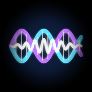

뮤지션과 크리에이터를 위한 iOS 앱
TineModeler 출시 예정
음악 • 신디사이저
피지컬 모델링 Rhodes 일렉트릭 피아노 신디사이저. 샘플 없음 — 순수한 물리 연산. 오일러-베르누이 빔 진동, 전자기 픽업, 헤르츠 접촉 해머를 실시간으로 구현.
1Take NEW
음악 • 녹음
뮤지션을 위한 전문 오디오 녹음 앱. 스튜디오 품질의 사운드로 연습과 공연을 녹음하세요. 스마트 마커와 실시간 이펙트 처리 지원.
GitInflow NEW
생산성 • 개발자 도구
iOS용 GitHub Issue 칸반 클라이언트. 백로그, 준비 완료, 진행 중, 완료 워크플로우로 여러 저장소의 작업을 관리. 스마트 공유 시트, 위젯, 로컬 알림 지원.

SonicDNA Collector NEW
음악 • 오디오 분석
아날로그 장비의 음향 특성을 캡처하는 전문 오디오 측정 도구. 스윕 신호를 생성하고 디지털 모델링을 위한 주파수 응답을 분석.
SonicDNA Engine 출시 예정
음악 • 오디오 프로세서
AUv3 플러그인을 지원하는 다목적 IR/NAM 오디오 프로세서. 기타, 베이스, 키보드, 신스, 보컬을 AI 장비 모델링과 컨볼루션으로 실시간 저지연 처리.
simpleMIDIController
음악 • 유틸리티
iOS용 간단하고 직관적인 MIDI 컨트롤러. 커스터마이즈 가능한 컨트롤로 음악 소프트웨어와 하드웨어에 MIDI 메시지를 전송.
MIDI2Kit
개발자 • 오픈 소스
MIDI 2.0(UMP, MIDI-CI, Property Exchange)를 구현하는 Swift 라이브러리. macOS 및 iOS용 차세대 MIDI 앱을 개발하세요.
PeerClock NEW
개발자 • 오픈 소스
Apple 기기를 위한 피어-이퀄 P2P 시계 동기화 라이브러리. 로컬 네트워크에서 iPhone과 Mac 간 ±2ms 이내로 시계를 동기화. 서버 불필요, 마스터 기기 불필요. 범용 명령어, 상태 공유, 정밀 이벤트 스케줄링 지원.